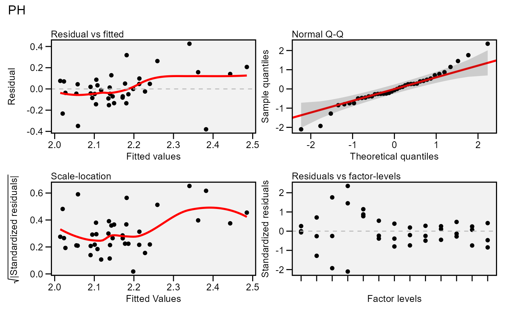

Residual plots for a output model of class gamem. Six types of plots
are produced: (1) Residuals vs fitted, (2) normal Q-Q plot for the residuals,
(3) scale-location plot (standardized residuals vs Fitted Values), (4)
standardized residuals vs Factor-levels, (5) Histogram of raw residuals and
(6) standardized residuals vs observation order. For a waasb object,
normal Q-Q plot for random effects may also be obtained declaring type = 're'
Usage
# S3 method for class 'gamem'
plot(
x,
var = 1,
type = "res",
position = "fill",
rotate = FALSE,
conf = 0.95,
out = "print",
n.dodge = 1,
check.overlap = FALSE,
labels = FALSE,
plot_theme = theme_metan(),
alpha = 0.2,
fill.hist = "gray",
col.hist = "black",
col.point = "black",
col.line = "red",
col.lab.out = "red",
size.line = 0.7,
size.text = 10,
width.bar = 0.75,
size.lab.out = 2.5,
size.tex.lab = 10,
size.shape = 1.5,
bins = 30,
which = c(1:4),
ncol = NULL,
nrow = NULL,
...
)Arguments
- x
An object of class
gamem.- var
The variable to plot. Defaults to
var = 1the first variable ofx.- type
One of the
"res"to plot the model residuals (default),type = 're'to plot normal Q-Q plots for the random effects, or"vcomp"to create a bar plot with the variance components.- position
The position adjustment when
type = "vcomp". Defaults to"fill", which shows relative proportions at each trait by stacking the bars and then standardizing each bar to have the same height. Useposition = "stack"to plot the phenotypic variance for each trait.- rotate
Logical argument. If
rotate = TRUEthe plot is rotated, i.e., traits in y axis and value in the x axis.- conf
Level of confidence interval to use in the Q-Q plot (0.95 by default).
- out
How the output is returned. Must be one of the 'print' (default) or 'return'.
- n.dodge
The number of rows that should be used to render the x labels. This is useful for displaying labels that would otherwise overlap.
- check.overlap
Silently remove overlapping labels, (recursively) prioritizing the first, last, and middle labels.
- labels
Logical argument. If
TRUElabels the points outside confidence interval limits.- plot_theme
The graphical theme of the plot. Default is
plot_theme = theme_metan(). For more details, seeggplot2::theme().- alpha
The transparency of confidence band in the Q-Q plot. Must be a number between 0 (opaque) and 1 (full transparency).
- fill.hist
The color to fill the histogram. Default is 'gray'.
- col.hist
The color of the border of the the histogram. Default is 'black'.
- col.point
The color of the points in the graphic. Default is 'black'.
- col.line
The color of the lines in the graphic. Default is 'red'.
- col.lab.out
The color of the labels for the 'outlying' points.
- size.line
The size of the line in graphic. Defaults to 0.7.
- size.text
The size for the text in the plot. Defaults to 10.
- width.bar
The width of the bars if
type = "contribution".- size.lab.out
The size of the labels for the 'outlying' points.
- size.tex.lab
The size of the text in axis text and labels.
- size.shape
The size of the shape in the plots.
- bins
The number of bins to use in the histogram. Default is 30.
- which
Which graphics should be plotted. Default is
which = c(1:4)that means that the first four graphics will be plotted.- ncol, nrow
The number of columns and rows of the plot pannel. Defaults to
NULL- ...
Additional arguments passed on to the function
patchwork::wrap_plots().
Author
Tiago Olivoto tiagoolivoto@gmail.com
Examples
# \donttest{
library(metan)
model <- gamem(data_g,
gen = GEN,
rep = REP,
resp = PH)
#> Evaluating trait PH |============================================| 100% 00:00:00
#> Method: REML/BLUP
#> Random effects: GEN
#> Fixed effects: REP
#> Denominador DF: Satterthwaite's method
#> ---------------------------------------------------------------------------
#> P-values for Likelihood Ratio Test of the analyzed traits
#> ---------------------------------------------------------------------------
#> model PH
#> Complete NA
#> Genotype 0.051
#> ---------------------------------------------------------------------------
#> Variables with nonsignificant Genotype effect
#> PH
#> ---------------------------------------------------------------------------
plot(model)
#> `geom_smooth()` using formula = 'y ~ x'
#> `geom_smooth()` using formula = 'y ~ x'

# }